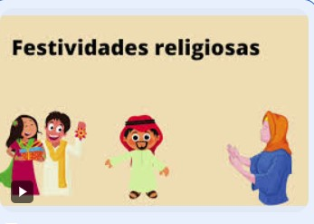
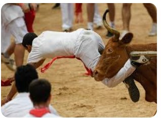

Grandes diversidades das Tradições
Brasil tem uma grande diversidade de tradições religiosas, que se manifestam em festas, crenças e práticas sociais:
Festas religiosas
Algumas das principais festas religiosas do Brasil são: a Festa dos Santos Reis, a Festa de Iemanjá, a Semana Santa, a
Festa de Nossa Senhora dos Prazeres, a Festa de Nossa Senhora da Penha, a Festa de São Benedito, a Festa de Nossa
Senhora da Piedade, a Festa de Nossa Senhora das Neves, a Romaria de Bom Jesus da Lapa, a Festa de São José de
Ribamar, a Festa do Rosário, o Círio de Nazaré, a Festa de Nossa Senhora Aparecida, a Festa do Padre Cícero e a Festa
de Santa Bárbara.
Religiões
A religião no Brasil é predominantemente cristã, mas também há outras variantes, como o Espiritismo, a Umbanda e o
Candomblé. A Constituição brasileira prevê a liberdade de religião e o Estado é laico
Origem
A primeira matriz religiosa do Brasil foi a indígena, mas não havia uma única religião indígena antes da colonização
europeia.
A tradição religiosa é a transmissão oral ou escrita da riqueza cultural religiosa que uma geração herdou das
anteriores.
As festas religiosas no Brasil são verdadeiros espetáculos de fé e devoção, onde diferentes tradições se encontram em uma harmonia única. Um exemplo marcante desse sincretismo religioso é a Lavagem do Bonfim, realizada em Salvador (BA). Nessa festa, as baianas lideram um cortejo que percorre 8 quilômetros até a Igreja do Bonfim.
A cor predominante nessa celebração é o branco, em homenagem a Oxalá, orixá da paz e da harmonia. As baianas realizam uma lavagem simbólica, utilizando vassouras e água de cheiro trazida por elas. Esse ato representa a purificação espiritual e a renovação das energias.
Durante o percurso, os participantes dão três voltas ao redor da igreja, fazem três pedidos e amarram uma fitinha do Senhor do Bonfim no portão. Essa fitinha é considerada um amuleto de proteção e boa sorte, sendo usada por pessoas de diferentes religiões

Festival dos Bebês Chorões (Naki Sumo) - Japão
Oficialmente conhecido como “Naki Sumo Crying Baby Festival”, em português algo como "Festival dos Bebês Chorões", este é um festival no Japão que é celebrado todos os anos em vários templos do país. E do que se trata? Como o próprio nome sugere, os lutadores de sumô seguram os bebês no ar e os fazem chorar.
Esta prática tem raízes nas antigas crenças xintoístas e budistas: a tradição diz que o choro alto dos bebês afasta os maus espíritos e lhes traz boa saúde. Dessa forma, os bebês são segurados nos braços em um ringue de sumô ao ar livre: normalmente, dois bebês competem em uma partida curta em que a primeira criança a chorar é declarada vencedora.
Corrida de San Fermín – Espanha
San Fermín é uma das maiores festas do mundo, celebrada em Pamplona, capital da província de Navarra, no norte da Espanha. A tradição é celebrada em homenagem a São Fermín, padroeiro de Pamplona e remonta ao século 14. Durante esta tradição cultural enraizada na comunidade local durante o mês de julho, mais precisamente entre os dias 6 e 14, os participantes correm diante de uma manada de touros pelas ruas estreitas da cidade. corrida acontece diante de seis touros selvagens e seis cabrestos. Com uma extensão total de 875 metros, é composto por sete trechos: o trecho Santo Domingo, a Câmara Municipal, os Mercadantes, a Estafeta, a Telefônica, o Callejón e a Praça dos Tuoros. Quando todos os touros chegam à esta praça e entram nos seus currais, a corrida termina.
